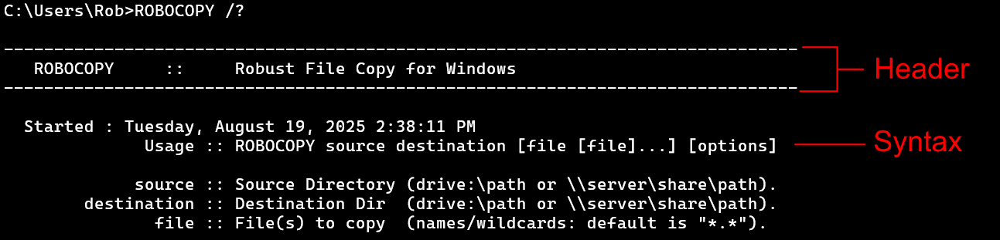

Lesson 5 - ROBOCOPY Options Part 1: So Many Options to Choose From!
Introducing the Options
Bring up the ROBOCOPY help information to view the options. Remember that means we type in ROBOCOPY /?.
There is much more printed out than the previous commands we have used but we will proceed the same as before, systematically. The first thing we see is the name of the command. They've made a nice little header for us isn't that fun?
It let's us know the time and date just for fun, then it tell us the syntax for the command.
We already knew about the ROBOCOPY source destination part, though notice that here, the destination is required whereas it was optional in XCOPY. The new part is the [file [file]...] [options] part.
First, we can see this is really two parts because the file stuff is enclosed completely by [] then there is a space followed by [options]. Remember that a space is used to separate inputs to a command.
The file stuff, as the definition below the syntax suggests, is where you can specify information about specific files you may want to copy. We won't be using this feature.
We will be using the options quite a bit though and the rest of the help information lists all the options you can use with ROBOCOPY. In fact, there are so many options, that it groups them together for us into 6 different categories: copy, throttling, selection, retry, logging, and job options. The final section has a few remarks about the application of certain options.
In the next few lessons, we will be looking at these options and talking about the ones which may be the most useful to us for our application of a backup program. We may also touch on some others just to demystify the command a little bit.
Familiar Options
First of all, we will cover the options that we already know. Look at the first section of options called Copy Options. There we see the first two are /S and /E which we learned about back with XCOPY. They do the same thing here.
Option /J for using unbuffered I/O is still with us and is listed a few lines down in the copy options section.
Option /L for only listing and not actually copying anything is still here too. It is the first option in the Logging Options section.
Options /D /Y and /EXCLUDE are not present in the list. ROBOCOPY has different behavior than XCOPY and we won't be needing these options. Exclusion options are listed in the File Selection Options section and we see we have many more options than merely listing parts of a file name like with XCOPY.
Option /D won't be needed since ROBOCOPY only copies files that have changed by default. You could still specify dates of files to exclude, using the /MAXAGE and related options in the File Selection Options section.
Finally, since ROBOCOPY only copies changed files by default, we don't need to confirm the copy with the /Y option.
Unfamiliar Options
We will divide relevent options into the next several lessons and discover what they do and why we might or might not use them. Some of these options include
/LEV:n/B/COPY:/PURGE/R/X/LOG
We will also be discussing many additional options, not just these ones.